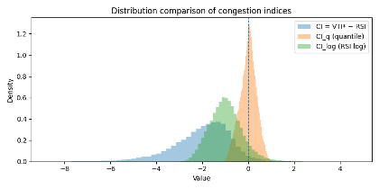

Measuring Traffic Congestion
We translate street-view detections into a grid-based congestion reading. The key idea is to compare observed traffic pressure (what we see on streets) against road supply (what the network can provide), using a consistent unit: 250m grid × hour × day type.
Objective
Measure and interpret congestion at a fine spatial–temporal scale, and compare patterns between weekday and weekend.
Core logic
Congestion = Traffic pressure − Road supply. We normalize both sides to reduce scale mismatch and sampling bias.
From street-view observations to a grid-based index

Vehicle Traffic Index (VTI)
What VTI captures
- Data source: street-level images (Mapillary) with detected motorcycles / cars / buses
- Aggregation: mean detected counts per grid per hour
- Weighting (PCE-based): motorcycle 0.4, car 1.0, bus 2.0 (pressure proxy)
- Interpretation: relative on-street pressure, not absolute traffic volume
Hourly variation (weekday)
Road Supply Index (RSI)
RSI represents road supply through network density and effective road area. Roads are grouped by class (motorway → local), buffered by class, and summarized per 250m grid.
Key components
- RLD — Road Length Density (per grid)
- RAD — Road Area Density (per grid)
- RSI — combined supply score (robustly normalized)
Why RSI matters
- High supply can absorb higher observed pressure.
- Low supply areas are sensitive to small increases in pressure.
- CI later compares pressure vs supply on the same grid.

Balancing pressure and supply
Definition
We compute congestion as CI = VTI* − RSI*, where “*” indicates robust normalization (ECDF / quantile mapping). CI > 0 suggests observed pressure exceeds local road supply; CI < 0 suggests supply is sufficient for the observed pressure.
Processing note
Robust scaling is applied before comparison to mitigate scale mismatch and saturation in street-view observations, ensuring CI is computed consistently across hours and day types.

Congestion index across time (weekday vs weekend)
Congestion typology
Typology logic
- Frequency: how often a grid is congested
- Severity: congestion intensity (top tiers)
- Time-of-day pattern: when congestion occurs
Resulting types
- Structural congestion
- Commuting congestion
- Activity-driven congestion
- Episodic congestion
- Mostly uncongested / insufficient data
Congestion transitions (weekday ↔ weekend)
Transition analysis
We compare dominant congestion types between weekday and weekend, focusing on mechanism shifts rather than magnitude.
Key patterns to look for
- Commuting → Activity-driven
- Persistent structural bottlenecks
- Temporal switching
- Consistently uncongested
- Insufficient data